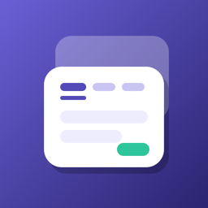
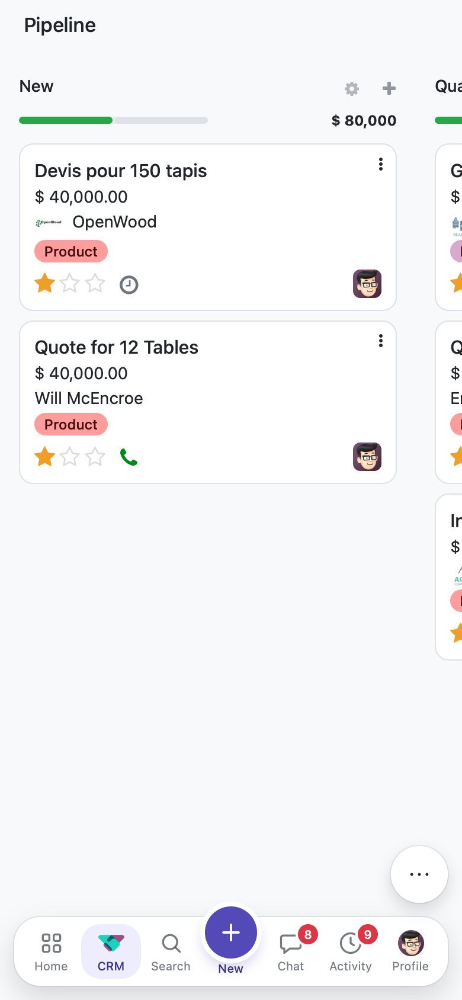
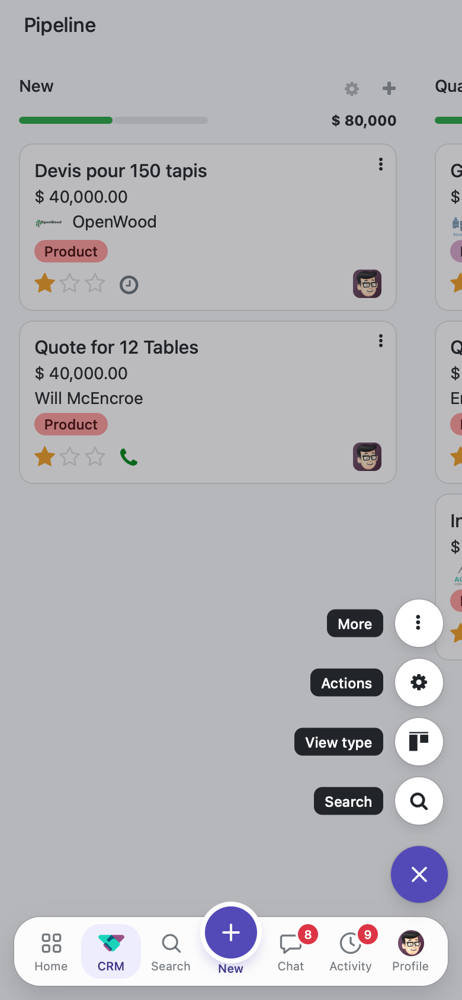
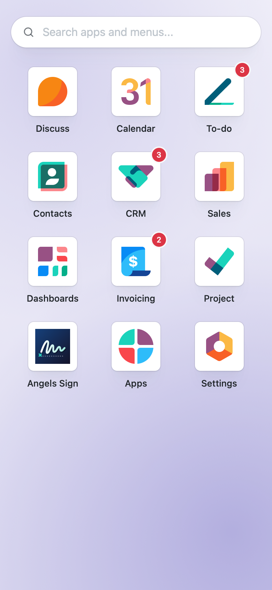
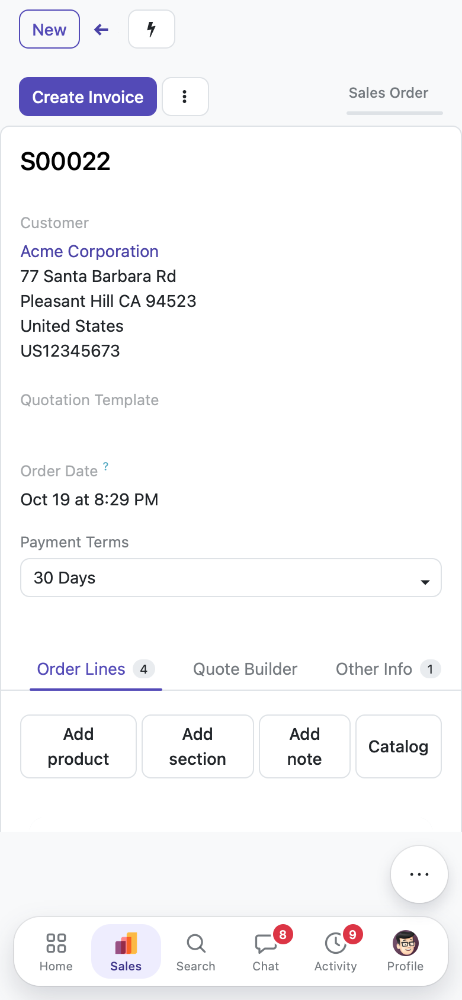
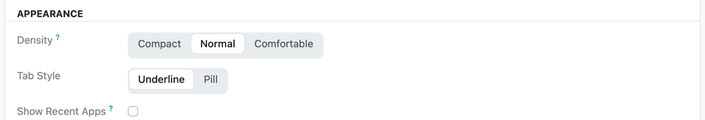

Angels Theme restyles the whole Odoo backend — home screen, lists, forms, kanban, dialogs and phones — with one brand color and a calm, card-based layout. Install it and every app follows, including the ones you add later.
Why a theme
The default backend is dense and generic, looks the same for every company and is hard to use on a phone. Changing it usually means patching views app by app.
Small controls, flat lists and forms that blend into the page make long days tiring.
Every company gets the same purple. Changing it means editing many SCSS files.
Menus, search and actions are squeezed at the top of a small screen.
web, changes no view and works with standard, third-party and your own apps.How it works
Install Angels Theme. Every app picks up the new look on the next page load.
Each company picks its home background: dotted, brand gradient, plain or an image.
Each user sets density, tab style and recent apps in My Preferences.
Change one SCSS token ($at-brand) to use your own color everywhere.
How it looks
Views become white cards on a gray page with a light navbar, round search and quieter labels.
Home
Apps in a grid with counters, a search box for apps and menus, and full keyboard navigation.
Forms
The sheet is a card, tabs are underlined or pills, and the statusbar reads as steps.
Kanban
Cards stand apart with rounded corners and a hover lift; columns show a slim progress bar.
Lists
Clean rows, group rows and totals, and a control panel where breadcrumbs, pager and view switcher are segments.
Dialogs
Rounded frame, the app icon in the header, the form as a card and the primary button on the right.
Phones
The navbar becomes a floating tab bar at the bottom that hides while you scroll down.




Phones
Search apps and menus from the home screen; the app tab shows its sections as an accordion.
Made for each user
People work differently. Angels Theme lets each user tune the backend without touching the others.
Compact, normal or comfortable spacing, per user.
Underline or pill tabs in every form.
Pinned apps, custom order and recent apps.
Subtle CSS animations, off when the system asks for reduced motion.
A clear brand focus ring and an error state that stands out.
The settings page as cards of rows with switches.

Settings
Settings become cards of rows with switches, and the apps menu on the left keeps its icons.
Requirements
Pure SCSS and a few small JavaScript patches. No view is replaced, so updates of other apps keep working.
Odoo
19.0 Community
Depends on
web
License
LGPL-3
Languages
English, Español
Made by Angels SAS. Pairs well with Angels Sign, our self-hosted electronic signature app. Questions or custom work? Contact us from this page.